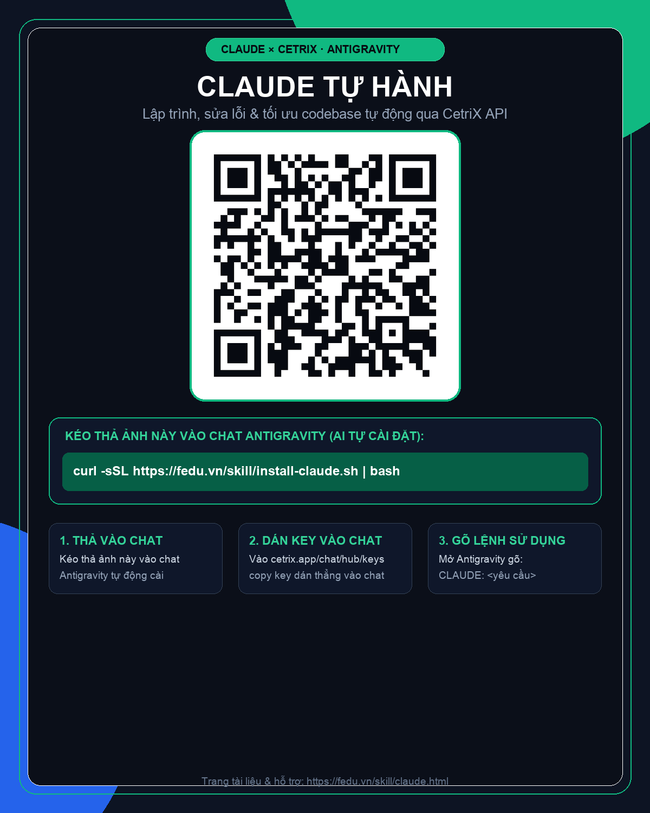
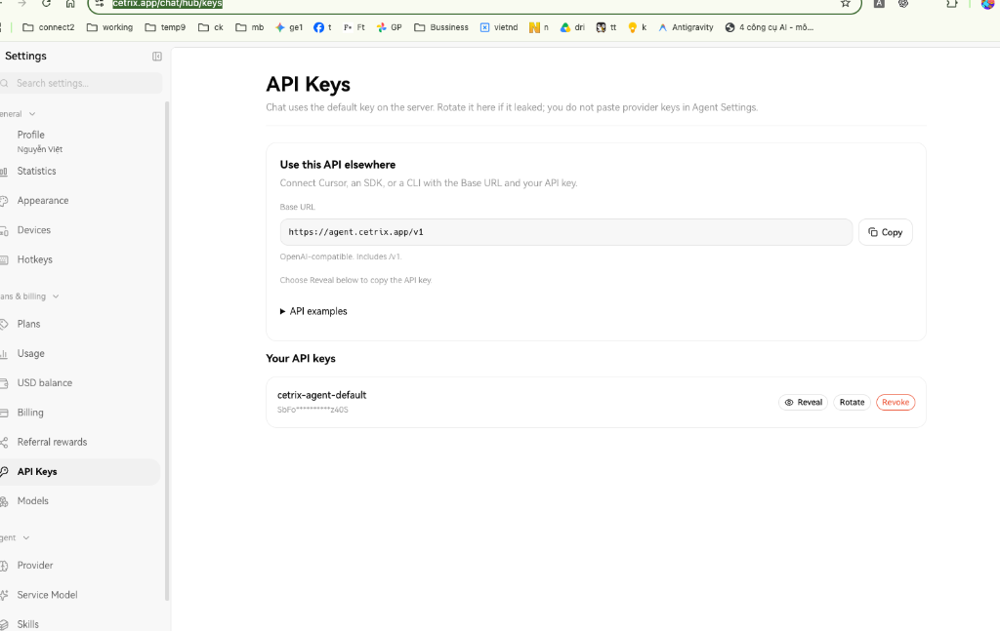

CLAUDE Tự Hành
Trợ lý lập trình siêu tốc qua CetriX API cho Antigravity. Cài đặt tự động chỉ bằng 1 bức ảnh QR và dán key trực tiếp vào khung chat — không cần mở Terminal phức tạp!
Cài Đặt & Sử Dụng
Thực hiện ngay trong khung chat Antigravity của bạn.
-
1
Kéo thả Thẻ QR vào khung chat Antigravity
Trợ lý AI sẽ tự động đọc lệnh và cài đặt plugin ngầm dưới nền cho bạn. -
2
Lấy Key & dán thẳng vào khung chat
Vào link cetrix.app/chat/hub/keys bấm Reveal copy mãsk-...rồi dán gửi cho AI. AI sẽ tự động lưu key an toàn. -
3
Bắt đầu sử dụng
Gõ lệnhCLAUDE: <yêu cầu>để giao việc kỹ thuật cho Claude!
✨ Không cần biết Terminal:
• AI tự động tạo môi trường ảo Python và cấu hình MCP.
• Dán key vào chat là xong, AI tự phân quyền bảo mật 600.

⬇ Tải Thẻ QR (Kéo vào chat để cài)
Kéo ảnh QR này thả vào khung chat Antigravity để AI tự động cài đặt.
Hoặc copy lệnh này gửi vào chat / dán Terminal:
curl -sSL https://fedu.vn/skill/install-claude.sh | bash
Cách Lấy API Key CetriX
Bạn chỉ cần làm theo 2 bước cực nhanh:
- Truy cập thẳng vào link: https://cetrix.app/chat/hub/keys (nếu chưa đăng nhập, trang web sẽ tự chuyển hướng để bạn đăng nhập tài khoản đã mua gói).
-
Tại mục Your API keys, bấm nút Reveal 👁️ cạnh dòng
cetrix-agent-defaultđể hiện key đầy đủ. -
Bấm Copy chuỗi key bắt đầu bằng
sk-...rồi dán thẳng vào khung chat Antigravity cho AI là xong!

Chỉ cần bấm Reveal tại mục Your API keys để lấy mã sk-...
So Sánh Trải Nghiệm Lập Trình
Chatbot Thông Thường
- • Chỉ trả về khối code chữ, bạn phải tự copy dán vào file.
- • Không tự đọc được toàn bộ cấu trúc dự án thực tế.
- • Không chạy được lệnh Terminal kiểm tra kết quả.
- • Dễ bị mất mạch tư duy khi chat nhiều lượt.
CLAUDE × CetriX (Tự Hành)
- • Tự động sửa file: Tự mở file, viết code và refactor chuẩn xác.
- • Tự chạy Bash: Tự chạy test, kiểm tra lỗi và tự sửa đến khi pass.
- • Sticky Session: Nhớ bối cảnh trao đổi liên tục qua nhiều turn.
- • Báo cáo Preview: Tự động tạo file xem trước Markdown đẹp mắt.
Sử dụng mô hình hàng đầu: Claude Opus 5.5 / Sonnet 5.5 qua CetriX API
Ví Dụ Câu Lệnh Thực Chiến (Prompts)
Chỉ cần bắt đầu bằng từ khóa CLAUDE: để kích hoạt siêu AI lập trình: